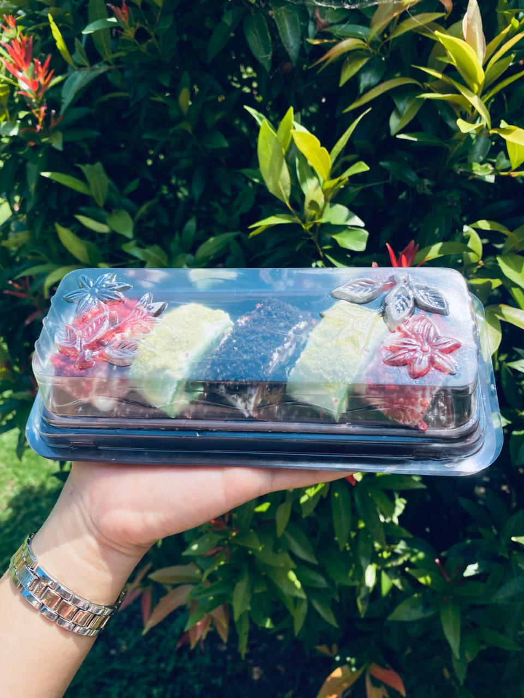

Mochi unik berbentuk gulungan menyerupai sushi dengan rasa manis, tekstur lembut, dan tampilan yang lucu. Cocok untuk teman santai, hadiah, ataupun camilan favorit sehari-hari.
Sovery and Sweet adalah usaha kuliner yang hadir untuk
menghadirkan camilan dan dessert yang tidak hanya lezat, tetapi juga
memiliki tampilan yang menarik dan unik. Kami percaya bahwa makanan
yang baik mampu memberikan kebahagiaan sederhana dalam setiap momen.
Melalui produk unggulan kami, Sweet Gururin Mochi,
kami menggabungkan cita rasa manis, tekstur lembut, dan kreativitas
dalam penyajian sehingga menghasilkan pengalaman menikmati dessert
yang berbeda dari biasanya.
Kami berkomitmen untuk menggunakan bahan berkualitas, menjaga
kebersihan proses produksi, dan memberikan pelayanan terbaik kepada
setiap pelanggan. Kepuasan pelanggan adalah prioritas utama kami,
karena setiap senyuman yang tercipta dari produk kami merupakan
motivasi terbesar bagi Sovery and Sweet untuk terus berkembang.
Hubungi kami melalui media sosial berikut.
Sovery and Sweet
Kuripan, Lombok Barat, Nusa Tenggara Barat